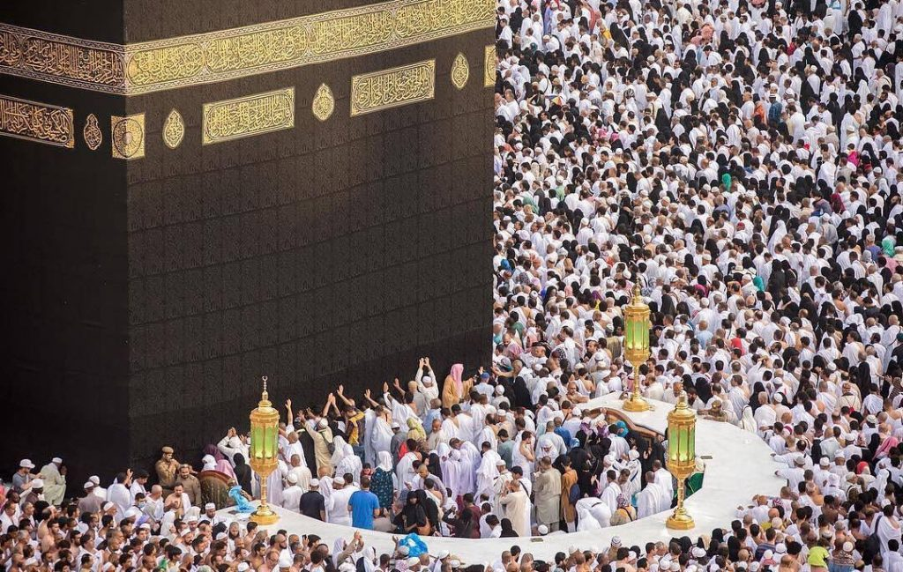

Kaaba · Sacred Places
The Hateem (Hijr Ismail) — Part of the Kaaba: History, Virtues & How to Pray There

On the north-western side of the Kaaba stands a low, semicircular wall of white marble, about 1.3 metres high, marked by three golden lanterns. Pilgrims call it the Hateem, or Hijr Ismail — and the ground it encloses is unlike any other patch of the Mataf: it is part of the Kaaba itself. That one fact explains everything about the place — why Tawaf must pass outside it, and why a short prayer inside it is one of the most sought-after moments of a pilgrimage.
Why part of the Kaaba stands outside its walls: When Ibrahim (AS) raised the Kaaba, its foundations included the area of the Hijr. When the Quraysh rebuilt the Kaaba before Islam, they resolved to use only purely lawful money — and it ran out. Rather than mix in unlawful wealth, they built the walls inside Ibrahim's foundation line and left the remaining strip, about three metres wide next to today's wall, outside, marking it with the low wall so people would know it still belonged to the House. The Prophet ﷺ told Aisha (RA) that, had the Quraysh not been so new to Islam, he would have rebuilt the Kaaba on Ibrahim's foundations — the Hijr inside, the door at ground level (Sahih al-Bukhari 1586; Sahih Muslim 1333). Out of care for their hearts, he left it as it was — and so it stands today.
The Tawaf rule — the reason this matters for your Umrah: Because the Hijr is part of the Kaaba, Tawaf is only complete if you circle outside the whole Hateem wall. A round that cuts through the Hijr, or across its wall, does not count, because you have circled inside the House rather than around it. In the crowd this is the easiest Tawaf mistake to make — the flow of people can carry you towards the gap at either end of the wall. Keep the wall on the outside of your circuit, as our Tawaf Step by Step guide explains round by round.
Praying inside the Hateem:
- What to pray: Two rak'ah of voluntary (nafl) prayer. Prayer in the Hijr is prayer inside the Kaaba, and the scholars hold it recommended — the Prophet ﷺ himself prayed two rak'ah inside the Kaaba in the year of the Conquest (Sahih al-Bukhari 505; Sahih Muslim 1329). For the obligatory (fard) prayers, join the congregation in the mosque instead, as he ﷺ did.
- How to enter: Through the open gaps at either end of the semicircular wall. There is no booking and no permit — only patience. Go at the quieter hours, outside the press of Tawaf peaks, and never push: a prayer reached by harming others has lost its point before it begins.
- What you will notice: Above the enclosed area, the Kaaba's golden rain-spout — the Meezab-e-Rahmat, the Spout of Mercy — pours the roof's rainwater down into the Hijr. Tradition also holds that Ibrahim (AS) built a shelter here for Ismail (AS) and his mother Hajar, and it is widely said that mother and son are buried beneath this ground — one more reason pilgrims treat the small enclosure with such reverence.
- A moment from the Seerah: It was standing in the Hijr, on the night journey of al-Isra, that the Prophet ﷺ described Jerusalem to the doubting Quraysh as Allah displayed it before him (Sahih al-Bukhari 3886).
Make the most of the minutes you get: Space inside the Hijr is small and the wait is real, so spend the prayer itself unhurriedly and keep your du'a long rather than your stay. Ask for everything — this is du'a offered, in effect, from inside the House of Allah. Afterwards, the natural continuations are the two rak'ah at Maqam-e-Ibrahim described in our Tawaf guide and the duas gathered in Tawaf Duas. If you are travelling with family, our Umrah for First-Timers guide shows where a quiet visit to the Hateem fits into a first journey without rushing the rites.
Quick questions:
- Is the Hateem really part of the Kaaba? Yes. The strip of ground beside the Kaaba's north-western wall lies on the foundations of Ibrahim (AS). The Quraysh rebuild left it outside the walls when their lawful funds ran out, and the Prophet ﷺ confirmed to Aisha (RA): "it is part of the House" (Sunan Abi Dawud 2028).
- Can I walk through the Hateem during Tawaf? No. Every round of Tawaf must pass outside the Hateem wall; a round that cuts through the Hijr does not count, because the Hijr is part of the Kaaba and Tawaf must circle the whole House. Watch for the gaps at both ends of the wall in the crowd.
- What should I pray inside the Hateem? Two rak'ah of voluntary (nafl) prayer, followed by your own du'a. Praying in the Hijr counts as praying inside the Kaaba itself. Enter through the gaps at either end of the wall at a quiet time, and pray the obligatory prayers with the congregation in the mosque.
Sources: Sunan Abi Dawud 2028 · Sahih al-Bukhari 505, 1586 & 3886 · Sahih Muslim 1329 & 1333 · Praying in Hijr Ismail — IslamQA ↗ · Hijr Ismail / Hateem — The Pilgrim ↗